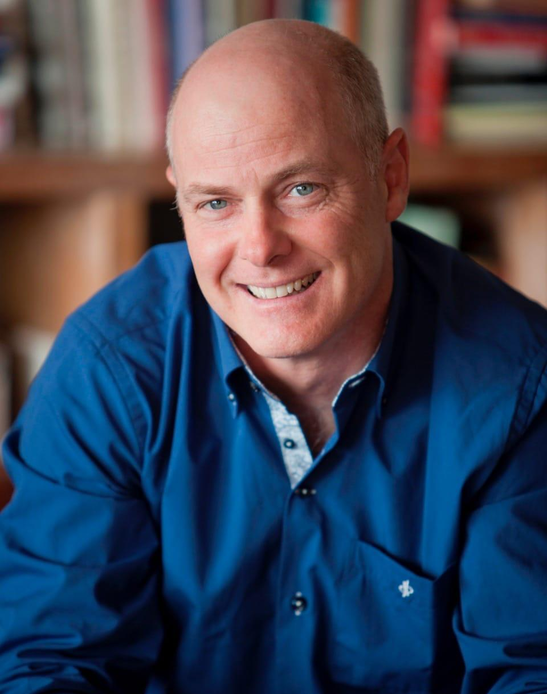
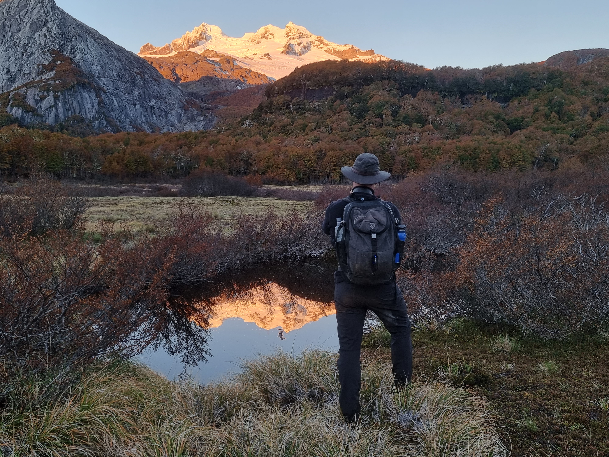

Más de un siglo
en la Patagonia

Franz Schirmer
y la Patagonia
Todo comenzó cuando Franz Schirmer llegó a Petrohué con la convicción de que este rincón de la Patagonia chilena tenía algo especial. Con sus manos construyó el primer Lodge a orillas del Lago Todos los Santos.
Lo que empezó como un puesto de avanzada para exploradores se convirtió en el corazón de todo lo que hoy es First Patagonia. Un hombre, una visión, un lugar en el fin del mundo.
El Paso
que lo cambió todo
Franz Schirmer no se conformó con administrar un lodge. Exploró los Andes palmo a palmo hasta conocer a fondo el Paso Vuriloche — una ruta milenaria con más de 18.500 años de historia. Construyó los refugios que permiten hacer la travesía y hoy ofrece la experiencia de cruzar la cordillera de Chile a Argentina por este paso histórico.
Durante décadas guió a viajeros de todo el mundo por ese sendero, sembrando en cada uno la semilla del espíritu pionero.


Matías Schirmer
y la visión pionera
Matías Schirmer, hijo de Franz, lidera hoy First Patagonia con la misma convicción que Franz tuvo hace más de un siglo: que Petrohué es un destino transformador, no un simple destino turístico.
La misión ahora es compartir ese espíritu con cada viajero que llega, diseñando experiencias que conecten profundamente con la naturaleza y la historia de este lugar único.